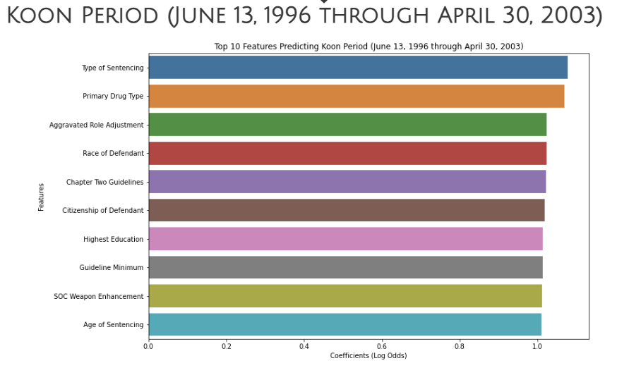
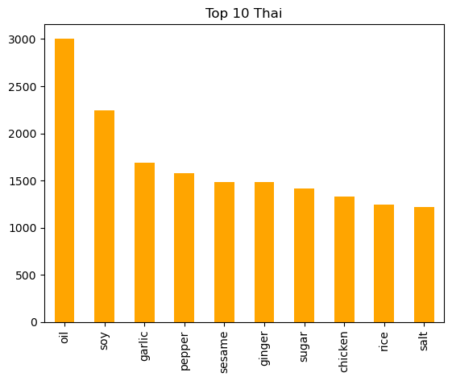
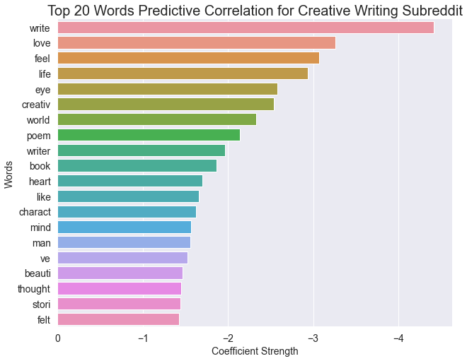

I am a solutions-driven, aspiring Data Scientist with a huge passion for solving complex problems with data and offering statistical insights to questions that need answering. I aspire to use a calculated way of thinking to address problems that can be answered creatively. Linkedin. GitHub.

Predicted how guidelines change the way cases are sentenced. As a team, constructed a problem where, working for the U.S. Sentencing Commision, provided insights into sentencing trends in order to identify areas for policy reform related to trial proceeding rights.
Explored how regulations impact sentencing and provided recommendations from findings.
Utilized a Random Forest Classifier with BayesSearchCV to perform a multiclass classification.

As a team, identified relevant Natural Language Processing problem involving classification.
Predicted type of cuisine based on common list of ingredients using modeling.
Used Pipeline with StandardScaler() and a RandomForest model (utilizing BayesSearchCV) for classification models.

Collected posts from the r/creativewriting and r/talesfromtechsupport subreddits using Pushshift’s API
Trained a classifier using Natural Language Processing. Used a tokenizer, and lemmatized our feature text column and performed a TfidfVectorizer.
Utilized Logistic Regression and visualized by displaying top positive and negative correlation of the features. Model performed at 99.1% accuracy so it accurately predicted which subreddit a text came from.